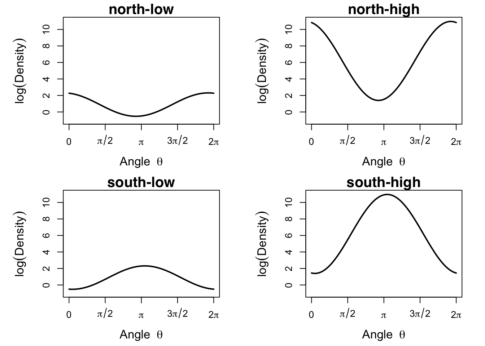
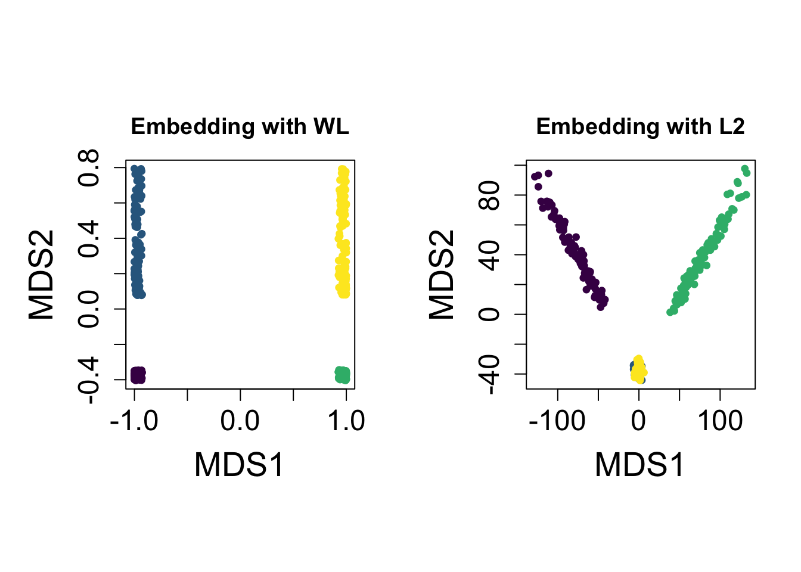

# Load packages
library(pacman)
pacman::p_load(maotai,
scales,
viridisLite)
# Helper functions
source("auxiliary.R")Simulated Example: 4 Types of vMF Distributions
Setup
This notebook is to replicate the first simulated example of 4 different types of vMF measures that are distinct to each other and show how two geometries differ in terms of their low-dimensional embeddings.
Generate
We will generate a set of idealized model distributions first to visually check whether they are indeed distinct.
# parameters and coordinates
set.seed(5)
theta_north = runif(1, 15*pi/8, 17*pi/8)
theta_south = runif(1, 7*pi/8, 9*pi/8)
kappa_low = runif(1, 0.5, 1.5)
kappa_high = runif(1, 4.5, 5.5)
mu_north = c(cos(theta_north), sin(theta_north))
mu_south = c(cos(theta_south), sin(theta_south))
# generate densities
vec_theta <- seq(0, 2*pi, length.out=500)
north_low <- aux_density(vec_theta, mu_north, kappa_low)
north_high <- aux_density(vec_theta, mu_north, kappa_high)
south_low <- aux_density(vec_theta, mu_south, kappa_low)
south_high <- aux_density(vec_theta, mu_south, kappa_high)# graphical setting
cex_main = 1.5
cex_lab = 1.25
cex_axis = 1
linewidth = 2
y_range = c(-1, 11)
ticks <- c(0, pi/2, pi, 3*pi/2, 2*pi) # custom tick positions
labels <- expression(0, pi/2, pi, 3*pi/2, 2*pi) # custom tick values
# visualize
par(mfrow=c(2,2), mar=c(4.25, 5.5, 1.5, 2))
plot(vec_theta, log(north_low),
xlab=expression("Angle "~ theta), ylab=expression(log(Density)),
xaxt="n", ylim=y_range, type="l", lwd=linewidth,
cex.axis=cex_axis, cex.lab=cex_lab)
axis(1, at=ticks, labels=labels, cex.axis=cex_axis, cex.lab=cex_lab)
title(main="north-low", family="sans", cex.main=cex_main)
plot(vec_theta, log(north_high),
xlab=expression("Angle "~ theta), ylab=expression(log(Density)),
xaxt="n", ylim=y_range, type="l", lwd=linewidth,
cex.axis=cex_axis, cex.lab=cex_lab)
axis(1, at=ticks, labels=labels, cex.axis=cex_axis, cex.lab=cex_lab)
title(main="north-high", family="sans", cex.main=cex_main)
plot(vec_theta, log(south_low),
xlab=expression("Angle "~ theta), ylab=expression(log(Density)),
xaxt="n", ylim=y_range, type="l", lwd=linewidth,
cex.axis=cex_axis, cex.lab=cex_lab)
axis(1, at=ticks, labels=labels, cex.axis=cex_axis, cex.lab=cex_lab)
title(main="south-low", family="sans", cex.main=cex_main)
plot(vec_theta, log(south_high),
xlab=expression("Angle "~ theta), ylab=expression(log(Density)),
xaxt="n", ylim=y_range, type="l", lwd=linewidth,
cex.axis=cex_axis, cex.lab=cex_lab)
axis(1, at=ticks, labels=labels, cex.axis=cex_axis, cex.lab=cex_lab)
title(main="south-high", family="sans", cex.main=cex_main)
Since four types seem heterogeneous clearly, now proceed to generate randomly perturbed versions of each distribution type. We will generate 100 per each type.
# parameters and coordinates
set.seed(2)
theta_north = runif(1, 15*pi/8, 17*pi/8)
theta_south = runif(1, 7*pi/8, 9*pi/8)
kappa_low = runif(1, 0.5, 1.5)
kappa_high = runif(1, 4.5, 5.5)
mu_north = c(cos(theta_north), sin(theta_north))
mu_south = c(cos(theta_south), sin(theta_south))
# generate distributions
n_per_group = 100
n_total = 4*n_per_group
all_mu <- array(0,c(n_per_group*4, 2))
all_kappa <- rep(0, n_per_group*4)
for (i in 1:n_per_group){
# randomly draw a single parameters
theta_north = runif(1, 15*pi/8, 17*pi/8)
theta_south = runif(1, 7*pi/8, 9*pi/8)
kappa_low = runif(1, 0.5, 1.5)
kappa_high = runif(1, 4.5, 5.5)
mu_north = c(cos(theta_north), sin(theta_north))
mu_south = c(cos(theta_south), sin(theta_south))
# assign
all_mu[i,] = mu_north
all_mu[i+n_per_group,] = mu_north
all_mu[i+2*n_per_group,] = mu_south
all_mu[i+3*n_per_group,] = mu_south
all_kappa[i] = kappa_high
all_kappa[i+n_per_group] = kappa_low
all_kappa[i+2*n_per_group] = kappa_high
all_kappa[i+3*n_per_group] = kappa_low
}Pairwise Distance and MDS
For visualization purpose, we will use multidimensional scaling (MDS), which is the simplest form of embedding given a complete pairwise distance matrix among all entities under consideration. Let’s compute pairwise distances using \(L_2\) and \(\mathcal{WL}\) metrics and then apply MDS onto \(\mathbb{R}^2\).
# file to load
file_load = "computed_pdist.RData"
if (file.exists(file_load)){
load(file_load)
} else {
# compute if not saved before
WL_mat <- aux_pdist_WL(all_mu, all_kappa)
L2_mat <- aux_pdist_L2(all_mu, all_kappa)
save(WL_mat, L2_mat, file=file_load)
}
# convert into 'dist' object
WL_obj <- as.dist(WL_mat)
L2_obj <- as.dist(L2_mat)
# multidimensional scaling
WL_embed <- cmdscale(WL_obj, k=2)
L2_embed <- cmdscale(L2_obj, k=2)Visualization of Embeddings
Finally, we can visualize the MDS embeddings under two different geometries.
# setup
vec_theta = seq(from=0, to=2*pi, length.out=100)
col_scale = viridis(4, option = "viridis")
vec_scale = rep(col_scale, each=n_per_group)
# graphical setting
cex_main = 2.5
cex_lab = 1.75
cex_axis = 1.5
linewidth = 0.5
cex_pts = 0.75
# draw
par(mfrow=c(1,2), pty="s", mar=c(4, 5.5, 3, 2))
plot(WL_embed, pch=19, cex=cex_pts, col=vec_scale,
xlab="MDS1", ylab="MDS2", cex.axis=cex_axis,
cex.lab=cex_lab, main="Embedding with WL")
plot(L2_embed, pch=19, cex=cex_pts, col=vec_scale,
xlab="MDS1", ylab="MDS2", cex.axis=cex_axis,
cex.lab=cex_lab, main="Embedding with L2")
[1] TRUE